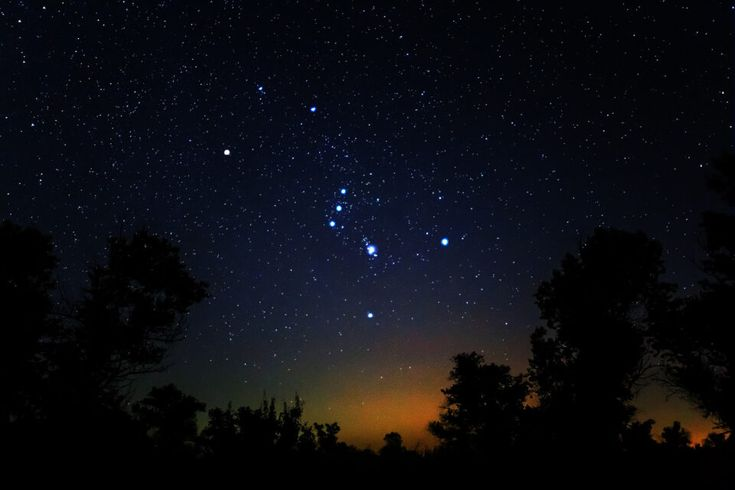
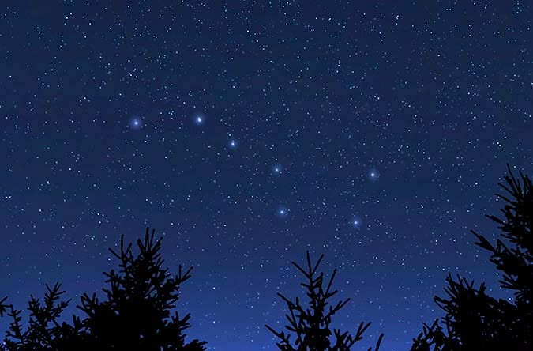
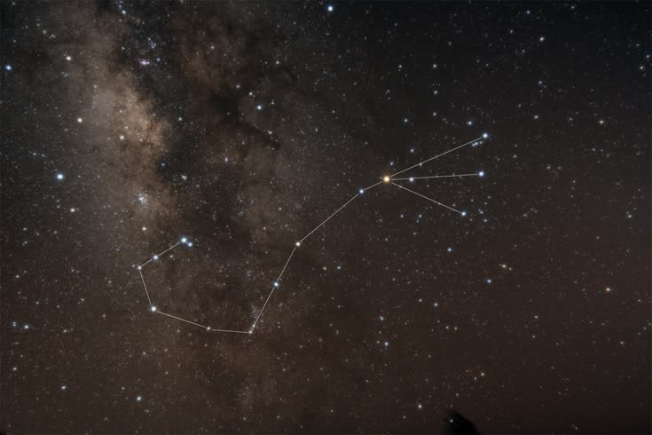

ASTRONOMY 101
Rasi Bintang

Apa Itu Rasi Bintang?
Rasi bintang adalah pola bintang yang terlihat dari Bumi dan secara tradisional diberi nama berdasarkan bentuk, tokoh, hewan, atau cerita tertentu.
Bintang-bintang yang membentuk sebuah rasi sebenarnya belum tentu memiliki hubungan fisik yang dekat satu sama lain. Bintang tersebut hanya terlihat membentuk pola tertentu jika diamati dari Bumi.
Pola tersebut membantu manusia mengenali bagian-bagian tertentu di langit dan menemukan berbagai objek astronomi.
Rasi Bintang dalam Astronomi
Dalam astronomi modern, langit secara resmi dibagi menjadi 88 wilayah rasi bintang. Pembagian ini digunakan untuk membantu menentukan lokasi berbagai objek langit.
Dengan menggunakan rasi sebagai acuan, astronom dapat menjelaskan lokasi sebuah bintang, galaksi, nebula, atau objek astronomi lainnya dengan lebih mudah.
Tiga Rasi Bintang Terkenal
Dari banyaknya rasi yang terdapat di langit, beberapa rasi terkenal karena memiliki pola yang mudah dikenali. Tiga di antaranya adalah Orion, Ursa Major, dan Scorpius.
1. Orion

Orion merupakan salah satu rasi bintang yang paling mudah dikenali di langit malam. Salah satu ciri utamanya adalah tiga bintang yang tampak sejajar dan dikenal sebagai Sabuk Orion.
Beberapa bintang terkenal yang berada di wilayah Orion adalah Betelgeuse dan Rigel. Orion juga memiliki Nebula Orion, yaitu salah satu wilayah pembentukan bintang yang terkenal.
2. Ursa Major

Ursa Major merupakan salah satu rasi bintang yang terkenal di langit utara. Bagian yang paling mudah dikenali dari rasi ini adalah pola tujuh bintang yang dikenal sebagai Big Dipper atau Biduk.
Pola Big Dipper dapat digunakan sebagai petunjuk untuk menemukan Polaris. Dengan mengikuti arah tertentu dari dua bintang pada bagian ujung Big Dipper, pengamat dapat menemukan arah menuju Polaris.
3. Scorpius

Scorpius atau Scorpio merupakan rasi bintang yang memiliki bentuk menyerupai kalajengking. Polanya cukup mudah dikenali karena memiliki susunan bintang yang melengkung seperti ekor.
Salah satu bintang paling terkenal dalam rasi Scorpius adalah Antares. Rasi ini juga berada di wilayah langit yang kaya akan bintang karena posisinya dekat dengan arah pusat Galaksi Bima Sakti jika dilihat dari Bumi.
Mengapa Rasi Bintang Penting?
Rasi bintang membantu manusia mengenali dan menemukan posisi berbagai objek di langit. Dengan membagi langit menjadi wilayah tertentu, pengamatan astronomi menjadi lebih teratur.
Sejak dahulu, pola bintang juga digunakan untuk membantu navigasi dan menentukan waktu atau musim. Pengetahuan tentang posisi bintang menjadi penting bagi masyarakat yang melakukan perjalanan pada malam hari.
Rasi Bintang dan Navigasi
Sebelum adanya teknologi navigasi modern, manusia menggunakan posisi bintang untuk membantu menentukan arah ketika melakukan perjalanan pada malam hari.
Salah satu bintang yang penting dalam navigasi adalah Polaris. Polaris berada sangat dekat dengan arah kutub langit utara sehingga posisinya tampak relatif tetap dan dapat digunakan untuk menemukan arah utara.
Rasi Bintang dan Musim
Rasi yang terlihat dari suatu tempat dapat berubah sepanjang tahun. Hal ini terjadi karena Bumi mengorbit Matahari sehingga arah pandangan kita ke luar angkasa juga berubah sepanjang tahun.
Akibatnya, beberapa rasi lebih mudah diamati pada waktu-waktu tertentu dalam setahun. Rasi yang terlihat juga bergantung pada lokasi pengamat di permukaan Bumi.
Apakah Bintang dalam Satu Rasi Berdekatan?
Tidak selalu. Bintang-bintang yang terlihat membentuk sebuah rasi dapat memiliki jarak yang sangat berbeda dari Bumi maupun satu sama lain.
Bentuk rasi merupakan hasil dari sudut pandang manusia dari Bumi. Jika kita dapat melihat bintang-bintang tersebut dari lokasi yang berbeda di luar angkasa, pola yang terlihat dapat berubah.
Rasi Bintang dan Budaya
Rasi bintang telah menjadi bagian dari berbagai kebudayaan sejak zaman dahulu. Banyak masyarakat memberikan nama dan cerita yang berbeda terhadap pola bintang yang mereka amati.
Cerita tersebut digunakan untuk menjelaskan pola di langit, membantu mengingat posisi bintang, serta menjadi bagian dari tradisi dan pengetahuan masyarakat.
Cara Mengamati Rasi Bintang
Rasi bintang dapat diamati dengan mata telanjang selama kondisi langit cukup gelap dan tidak terlalu banyak terkena polusi cahaya.
Untuk mengenali rasi dengan lebih mudah, pengamat dapat menggunakan peta langit sebagai panduan. Setelah mengenali beberapa pola utama seperti Orion, Ursa Major, dan Scorpius, rasi lainnya akan menjadi lebih mudah ditemukan.
✨ FUN FACT
Rasi Orion merupakan salah satu rasi yang paling mudah dikenali karena memiliki tiga bintang yang tampak membentuk Sabuk Orion.